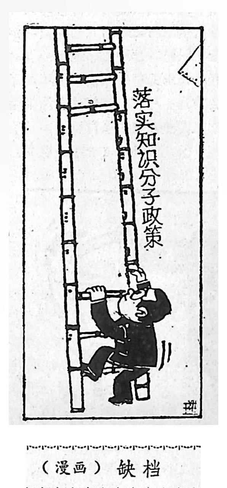

佚名 《人事》1986年第11期（总第14期），第41页
缺档
Missing Rungs
- Text in the drawing
- 落实知识分子政策
Implement the policy on intellectuals - Description
- A man climbs a ladder labeled 'implement the policy on intellectuals' and finds most of the rungs above him missing.
- Note
- 落实知识分子政策 referred to restoring the status and pay of intellectuals after the Cultural Revolution.
- Artist
- Unattributed 佚名
- Published in
- 《人事》1986年第11期（总第14期）, p. 41
- Themes
- Policy on intellectuals · Reform and its implementation

Cite
Unattributed, “缺档” [Missing Rungs], Renshi (Personnel) 《人事》, 1986, no. 11, p. 41.